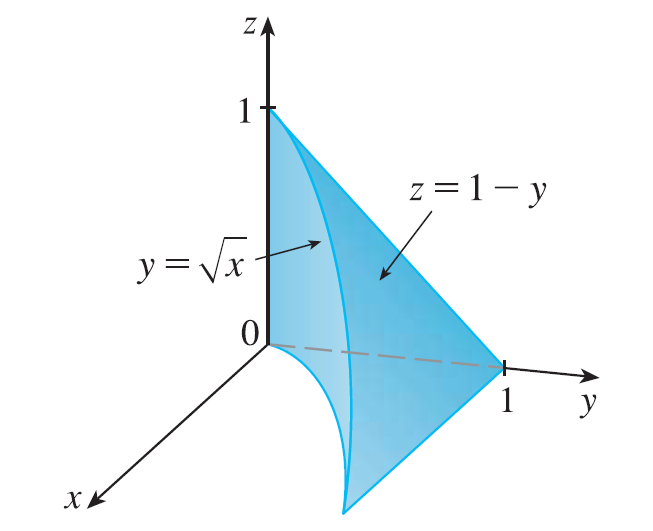

The figure shows the region of integration for the integral \(\int_0^1 \int_{\sqrt{x}}^1 \int_0^{1-y} f(x, y, z) dz dy dx\). Rewrite this integral as an equivalent iterated integral in the five other orders.
